说明：本文档以新建一个简单的保单管理为例，数据库以MySQL为例，使用navicat作为连接数据库的可视化界面，详细列出开发流程， 该模块将提供保单的查询功能。
开发环境：数据库：MySQL
新建一个表BAS_POLICY如图1所示：
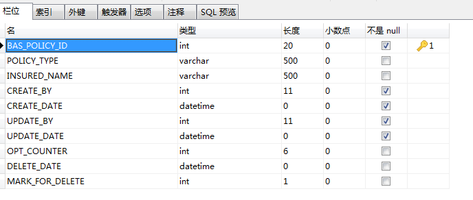
图 1
(1）新建一个类Policy类和PolicyVo类如下：
-----------------------------------Policy类----------------------------------
package com.newtouch.starter.policy;
import java.io.Serializable;
import com.newtouch.lion.model.VersionEntity;
public class Policy extends VersionEntity<Long> implements Serializable {
private static final long serialVersionUID = -6327022095298899613L;
private Long id; //保单ID
private String policyType; //保单类型
private String insuredName; //被保人姓名
public Long getId() {
return id;
}
public void setId(Long id) {
this.id = id;
}
public String getPolicyType() {
return policyType;
}
public void setPolicyType(String policyType) {
this.policyType = policyType;
}
public String getInsuredName() {
return insuredName;
}
public void setInsuredName(String insuredName) {
this.insuredName = insuredName;
}
public Policy(Long id, String policyType, String insuredName) {
super();
this.id = id;
this.policyType = policyType;
this.insuredName = insuredName;
}
@Override
public String toString() {
return "Policy [id=" + id + ", policyType=" + policyType
+ ", insuredName=" + insuredName + "]";
}
}
--------------------------------PolicyVo类----------------------------------
package com.newtouch.starter.policy;
import java.io.Serializable;
public class PolicyVo implements Serializable{
private static final long serialVersionUID = -6327022095298899613L;
private Long id; //保单ID
private String policyType; //保单类型
private String insuredName; //被保人姓名
public Long getId() {
return id;
}
public void setId(Long id) {
this.id = id;
}
public String getPolicyType() {
return policyType;
}
public void setPolicyType(String policyType) {
this.policyType = policyType;
}
public String getInsuredName() {
return insuredName;
}
public void setInsuredName(String insuredName) {
this.insuredName = insuredName;
}
@Override
public String toString() {
return "PolicyVo [id=" + id + ", policyType=" + policyType
+ ", insuredName=" + insuredName + "]";
}
public PolicyVo() {
super();
}
public PolicyVo(Long id, String policyType, String insuredName) {
super();
this.id = id;
this.policyType = policyType;
this.insuredName = insuredName;
}
}
(2）新建置文件bas_serviceBean.mysql.orm.xml，并在文件中配置Policy的属性
<?xml version="1.0" encoding="UTF-8"?>
<entity-mappings xmlns="http://java.sun.com/xml/ns/persistence/orm"
xmlns:xsi="http://www.w3.org/2001/XMLSchema-instance"
xsi:schemaLocation="http://java.sun.com/xml/ns/persistence/orm http://java.sun.com/xml/ns/persistence/orm_2_0.xsd"
version="2.0">
<package>com.newtouch.starter.policy</package>
<access>PROPERTY</access>
<!-- 保单信息 -->
<entity class="Policy">
<table name="BAS_POLICY" />
<attributes>
<id name="id">
<column name="policy_id" unique="true" nullable="false" precision="11" scale="0" />
<generated-value strategy="IDENTITY" />
</id>
<basic name="policyType">
<column name="POLICY_TYPE" length="500" nullable="true"/>
</basic>
<basic name="insuredName">
<column name="INSURED_NAME" length="500" nullable="true"/>
</basic>
</attributes>
</entity>
</entity-mappings>
(3）将配置文件注册到applicationContext-jpa.xml中，如下所示（红色字体标识的）
<?xml version="1.0" encoding="UTF-8"?>
<beans xmlns="http://www.springframework.org/schema/beans"
xmlns:xsi="http://www.w3.org/2001/XMLSchema-instance"
xsi:schemaLocation="http://www.springframework.org/schema/beans http://www.springframework.org/schema/beans/spring-beans-3.1.xsd">
<!-- Hibernate Common Configuraction -->
<bean class="org.springframework.orm.jpa.support.PersistenceAnnotationBeanPostProcessor" />
<bean class="org.springframework.dao.annotation.PersistenceExceptionTranslationPostProcessor" />
<!-- 指定JPA持久化提供商，此处使用Hibernate实现HibernatePersistence类 -->
<bean id="persistenceProvider" class="org.hibernate.ejb.HibernatePersistence" />
<!-- 如果指定jpaVendorAdapter此属性可选，此处为HibernateJpaDialect -->
<bean id="jpaDialect" class="org.springframework.orm.jpa.vendor.HibernateJpaDialect" />
<!-- 指定实现厂商专用特性，即generateDdl= false表示不自动生成DDL，database= HSQL表示使用hsqldb数据库 -->
<bean id="jpaVendorAdapter" class="org.springframework.orm.jpa.vendor.HibernateJpaVendorAdapter">
<property name="generateDdl" value="false" />
<property name="database" value="HSQL" />
</bean>
<!-- 配置hibernate session工厂 -->
<bean id="entityManagerFactory" class="org.springframework.orm.jpa.LocalContainerEntityManagerFactoryBean">
<property name="dataSource" ref="dataSource" />
<property name="persistenceProvider" ref="persistenceProvider" />
<!-- <property name="persistenceXmlLocation" value="classpath:META-INF/persistence-mysql.xml"></property>-->
<property name="mappingResources">
<list>
<value>model/application/bas_app_properties.${database.prefix}.orm.xml</value>
<value>model/datagrid/bas_datagrid.${database.prefix}.orm.xml</value>
<value>model/system/bas_demo.${database.prefix}.orm.xml</value>
<value>model/system/bas_common.${database.prefix}.orm.xml</value>
<value>model/system/bas_login_log.${database.prefix}.orm.xml</value>
<value>model/system/bas_system.${database.prefix}.orm.xml</value>
<value>model/system/bas_tasks.${database.prefix}.orm.xml</value>
<value>model/bas_policy.${database.prefix}.orm.xml</value>
<value>model/system/bas_reminder.${database.prefix}.orm.xml</value>
</list>
</property>
<property name="jpaProperties">
<props>
<!-- <prop key="hibernate.hbm2ddl.auto">${hibernate.hbm2ddl.auto}</prop>-->
<prop key="hibernate.dialect">${hibernate.dialect}</prop>
<prop key="hibernate.show_sql">${hibernate.show_sql}</prop>
<prop key="hibernate.format_sql">${hibernate.format_sql}</prop>
<prop key="hibernate.use_sql_comments">${hibernate.use_sql_comments}</prop>
<prop key="hibernate.generate_statistics">${hibernate.generate_statistics}</prop>
<prop key="hibernate.max_fetch_depth">${hibernate.max_fetch_depth}</prop>
<prop key="hibernate.jdbc.batch_size">${hibernate.jdbc.batch_size}</prop>
<prop key="hibernate.jdbc.fetch_size">${hibernate.jdbc.fetch_size}</prop>
<prop key="hibernate.max_fetch_depth">${hibernate.max_fetch_depth}</prop>
<prop key="hibernate.cache.use_query_cache">${hibernate.cache.use_query_cache}</prop>
<prop key="hibernate.cache.use_second_level_cache">${hibernate.cache.use_second_level_cache}</prop>
<prop key="hibernate.cache.provider_class">${hibernate.cache.provider_class}</prop>
<prop key="hibernate.cache.region.factory_class">${hibernate.cache.region.factory_class}</prop>
<prop key="current_session_context_class">thread</prop>
</props>
</property>
</bean>
</beans>
(1）新建PolicyDao接口，并继承BaseDao，代码如下
package com.newtouch.starter.dao;
import com.newtouch.lion.dao.BaseDao;
import com.newtouch.starter.policy.Policy;
public interface PolicyDao extends BaseDao<Policy, Long> {
}
(2）创建PolicyDaoImpl，继承BaseDaoImpl并实现PolicyDao，代码如下
package com.newtouch.starter.dao;
import org.springframework.stereotype.Repository;
import com.newtouch.lion.dao.impl.BaseDaoImpl;
import com.newtouch.starter.policy.Policy;
@Repository
public class PolicyDaoImpl extends BaseDaoImpl<Policy, Long> implements PolicyDao {
private static final long serialVersionUID = -1494476134711376183L;
}
(1）创建接口PolicyService,代码如下：
package com.newtouch.starter.service;
import com.newtouch.lion.page.PageResult;
import com.newtouch.lion.query.QueryCriteria;
import com.newtouch.starter.policy.Policy;
public interface PolicyService {
/**
* 分页查询保单信息
* @param queryCriteria
* @return
*/
public PageResult<Policy> doFindByCriteria(QueryCriteria queryCriteria);
}
(2）创建PolicyServiceImpl,使之继承AbstractService并实现PolicyService,代码如下：
package com.newtouch.starter.service;
import java.util.Map;
import org.springframework.beans.factory.annotation.Autowired;
import org.springframework.stereotype.Service;
import com.newtouch.lion.common.sql.HqlUtils;
import com.newtouch.lion.page.PageResult;
import com.newtouch.lion.query.QueryCriteria;
import com.newtouch.lion.service.AbstractService;
import com.newtouch.starter.dao.PolicyDao;
import com.newtouch.starter.policy.Policy;
@Service
public class PolicyServiceImpl extends AbstractService implements
PolicyService {
@Autowired
private PolicyDao policyDao;
@Override
public PageResult<Policy> doFindByCriteria(QueryCriteria criteria) {
String queryEntry = " from Policy ";
String[] whereBodies = {"policyType like:policyType"};
String fromJoinSubClause = "";
Map<String, Object> params = criteria.getQueryCondition();
String orderField = criteria.getOrderField();
String orderDirection = criteria.getOrderDirection();
String hql = HqlUtils.generateHql(queryEntry, fromJoinSubClause, whereBodies, orderField, orderDirection, params);
int pageSize = criteria.getPageSize();
int startIndex = criteria.getStartIndex();
PageResult<Policy> pageResult = this.policyDao.query(hql, HqlUtils.generateCountHql(hql, null), params, startIndex, pageSize);
return pageResult;
}
}
创建PolicyController如下：
该controller层只提供查询功能
package com.newtouch.starter.controller;
import org.apache.commons.lang.StringUtils;
import org.slf4j.Logger;
import org.slf4j.LoggerFactory;
import org.springframework.beans.factory.annotation.Autowired;
import org.springframework.stereotype.Controller;
import org.springframework.web.bind.annotation.ModelAttribute;
import org.springframework.web.bind.annotation.RequestMapping;
import org.springframework.web.bind.annotation.RequestMethod;
import org.springframework.web.bind.annotation.ResponseBody;
import com.newtouch.lion.data.DataTable;
import com.newtouch.lion.page.PageResult;
import com.newtouch.lion.query.QueryCriteria;
import com.newtouch.lion.web.controller.AbstractController;
import com.newtouch.lion.web.model.QueryDt;
import com.newtouch.starter.policy.Policy;
import com.newtouch.starter.policy.PolicyVo;
import com.newtouch.starter.service.PolicyService;
@Controller
@RequestMapping("/system/policy/")
public class PolicyController extends AbstractController {
private final Logger logger = LoggerFactory.getLogger(super.getClass());
/** 默认排序字段名称 */
private static final String DEFAULT_ORDER_FILED_NAME = "id";
@Autowired
private PolicyService policyService;
@RequestMapping(value="/index",method=RequestMethod.GET)
public String index(){
logger.info("dddd");
return "system/policy/index";
}
@RequestMapping(value = "list")
@ResponseBody
public DataTable<Policy> list(QueryDt query,@ModelAttribute("policy") PolicyVo policyVo) {
QueryCriteria queryCriteria = new QueryCriteria();
// 设置分页
启始页
queryCriteria.setStartIndex(query.getPage());
// 每页大小
queryCriteria.setPageSize(query.getRows());
// 设置排序字段及排序方向
if(StringUtils.isNotEmpty(query.getSort())&&StringUtils.isNotEmpty(query.getOrder())) {
queryCriteria.setOrderField(query.getSort());
queryCriteria.setOrderDirection(query.getOrder());
} else {
queryCriteria.setOrderField(DEFAULT_ORDER_FILED_NAME);
queryCriteria.setOrderDirection(QueryCriteria.ASC);
}
//查询条件 名称按模糊查询
if(StringUtils.isNotEmpty(policyVo.getPolicyType())){
queryCriteria.addQueryCondition("policyType","%"+policyVo.getPolicyType()+"%");
}
PageResult<Policy> pageResult = policyService.doFindByCriteria(queryCriteria);
return pageResult.getDataTable(query.getRequestId());
}
}
(1）写前台js
在src/mian/webapp/resourves/admin/scripts/system下新建一个policy.js文件，如下
var icondg=$('sys_policy_tb'); //datagrids
var queryForm=$('queryform');
$(function(){
//默认加载函数
lion.web.AppInit();
//验证表单
icondg=$('sys_policy_tb'); //datagrids
queryForm=$('queryform');
//查询
$('btnQuery').click(function(){
icondg.datagrids({querydata:queryForm.serializeObject()});
var queryparam=icondg.datagrids('queryparams');
icondg.datagrids('reload');
});
//刷新
$('btnRefresh').click(function(){
icondg.datagrids('reload');
});
});
(2）写前台index页面
在src/mian/webapp/WEB-INF/view/system下新建一个policy文件夹，在policy文件夹下新建一个index.ftl文件，代码如下：
<assign base = request.contextPath/>
<!DOCTYPE html>
<html lang="en" class="no-js">
<head>
<title> <@spring.message "sys.policy.html.title"/></title>
<link href="${base}/resources/global/plugins/ztree/css/metro.css" rel="stylesheet" type="text/css"/>
<link href="${base}/resources/global/plugins/bootstrap-select/bootstrap-select.min.css" rel="stylesheet" type="text/css" />
<link href="${base}/resources/global/plugins/bootstrap-toastr/toastr.css" rel="stylesheet" type="text/css">
<!--DataTable css Start-->
<link rel="stylesheet" type="text/css" href="${base}/resources/global/plugins/select2/select2.css"/>
<link rel="stylesheet" type="text/css" href="${base}/resources/global/plugins/datatables/extensions/Scroller/css/dataTables.scroller.min.css"/>
<link rel="stylesheet" type="text/css" href="${base}/resources/global/plugins/datatables/extensions/ColReorder/css/dataTables.colReorder.min.css"/>
<link rel="stylesheet" type="text/css" href="${base}/resources/global/plugins/datatables/plugins/bootstrap/dataTables.bootstrap.css"/>
<!--DataTable css End-->
<link href="${base}/resources/global/plugins/bootstrap-select/bootstrap-select.min.css" rel="stylesheet" type="text/css" />
<link href="${base}/resources/global/css/lion.css" rel="stylesheet" type="text/css" />
<link href="${base}/resources/global/css/combotree/combotree.css" rel="stylesheet" type="text/css" />
<!-- DataTables js Start -->
<script type="text/javascript" src="${base}/resources/global/plugins/select2/select2.min.js"></script>
<script type="text/javascript" src="${base}/resources/global/plugins/datatables/media/js/jquery.dataTables.js"></script>
<script type="text/javascript" src="${base}/resources/global/plugins/datatables/extensions/TableTools/js/dataTables.tableTools.js"></script>
<script type="text/javascript" src="${base}/resources/global/plugins/datatables/extensions/ColReorder/js/dataTables.colReorder.js"></script>
<script type="text/javascript" src="${base}/resources/global/plugins/datatables/extensions/Scroller/js/dataTables.scroller.js"></script>
<script type="text/javascript" src="${base}/resources/global/plugins/datatables/plugins/bootstrap/dataTables.bootstrap.js"></script>
<!-- DataTables js End -->
<script src="${base}/resources/global/plugins/bootbox/bootbox.min.js" type="text/javascript"></script>
<script src="${base}/resources/global/plugins/bootstrap-toastr/toastr.min.js"></script>
<script src="${base}/resources/admin/pages/scripts/ui-toastr.js"></script>
<script src="${base}/resources/global/plugins/jquery-validation/js/jquery.validate.min.js" type="text/javascript"></script>
<!--lion UI JS Start-->
<script src="${base}/resources/global/js/lion.js" type="text/javascript"></script>
<script src="${base}/resources/global/js/form/form.fill.js" type="text/javascript"></script>
<script src="${base}/resources/global/js/local/lion-lang-zh_CN.js" type="text/javascript"></script>
<script src="${base}/resources/global/js/combotree/combotree.js" type="text/javascript"></script>
<script src="${base}/resources/global/js/datagrid/datagrids.js" type="text/javascript"></script>
<!--ztree js-->
<script src="${base}/resources/global/plugins/ztree/js/jquery.ztree.all-3.5.min.js" type="text/javascript"></script>
<!--lang-->
<script src="${base}/resources/admin/scripts/admin-common.js" type="text/javascript"></script>
<!-- tasks -->
<script src="${base}/resources/admin/scripts/system/policy.js" type="text/javascript"></script>
</head>
<body class="page-header-fixed page-sidebar-closed-hide-logo page-sidebar-closed-hide-logo">
<!-- BEGIN PAGE CONTENT INNER -->
<div class="portlet light">
<div class="portlet-body">
<div class="row">
<div class="col-md-12 margin-bottom-10">
<form id="queryform" class="form-horizontal">
<label class="control-label col-md-2" for="nameZh" >
<@spring.message "sys.policy.html.policyType"/>
</label>
<div class="col-md-2">
<input class="form-control input-small" type="text" size="30" name="name" id="name" placeholder="<@spring.message "sys.policy.html.tip.policyType"/>" />
</div>
<div class="col-md-2">
<a href="javascript:void(0)" id="btnQuery" class="btn blue">
<i class="fa fa-search"></i>
<@spring.message "common.query.btn.text"/>
</a>
</div>
</form>
</div>
<div class="col-md-12 margin-bottom-10" id="toolbar">
<a id="btnAdd" class="btn btn-sm yellow" data-toggle="modal" href="basic">
<i class="fa fa-plus"></i>
<@spring.message "common.toolbar.btn.add.text"/>
</a>
<a id="btnEdit" class="btn btn-sm red">
<i class="fa fa-edit"></i>
<@spring.message "common.toolbar.btn.edit.text"/>
</a>
<a id="btnDelete" class="btn btn-sm purple">
<i class="fa fa-times"></i>
<@spring.message "common.toolbar.btn.delete.text"/>
</a>
<a id="btnRefresh" class="btn btn-sm blue">
<i class="fa fa-refresh"></i>
<@spring.message "common.toolbar.btn.reload.text"/>
</a>
<a href="javascript:void(0)" id="btnExport" class="btn btn-sm green">
<i class="fa fa-file-excel-o"></i>
<@spring.message "common.toolbar.btn.export.text"/>
</a>
</div>
<div class="col-md-12">
<table class="lion-datagrids table table-striped table-bordered table-hover" id="sys_policy_tb" data-singleselect="true", data-loadUrl="${base}/system/policy/list.json" data-checkbox="true" data-pageSize="10">
<thead>
<tr>
<th class="table-checkbox" data-field='id' data-checkbox="true">
<input type="checkbox" class="group-checkable" data-set="sys_policy_tb.checkboxes" data-sortable="false" />
</th>
<th data-field='policyType' data-sortDir="asc" style="width:100px;">
<@spring.message "sys.policy.html.policyType"/>
</th>
<th data-field="insuredName" style="width:100px;">
<@spring.message "sys.policy.html.pinsuredName"/>
</th>
</tr>
</thead>
</table>
</div>
</div>
</div>
</div>
</body>
</html>
(1）在src/main/resources/i18n/system下新建一个policy文件夹，在该文件夹下新建两个文件，policy_en_US.properties（用于存放英文数据）和policy_zh_CN.properties（用于存放中文数据），在policy_zh_CN.properties中内容如下：
sys.policy.html.title=保单管理
sys.policy.html.policyType=投保类型
sys.policy.html.tip.policyType=请输入投保类型
sys.policy.html.pinsuredName=被保人姓名
(2）将国际化的文件在dispatcher-servlet.xml中注册如下（表红色的部分）：
<!-- i18n -->
<bean id="messageSource" class="org.springframework.context.support.ReloadableResourceBundleMessageSource">
<property name="basenames">
<list>
<value>classpath:i18n/messages</value>
<value>classpath:i18n/login/login</value>
<value>classpath:i18n/system/application/applicationProperty</value>
<value>classpath:i18n/system/parameter/parameter</value>
<value>classpath:i18n/system/user/user</value>
<value>classpath:i18n/system/role/role</value>
<value>classpath:i18n/system/group/group</value>
<value>classpath:i18n/system/datagrid/datagrid</value>
<value>classpath:i18n/system/datacolumn/datacolumn</value>
<value>classpath:i18n/system/code/codeList</value>
<value>classpath:i18n/system/code/codeType</value>
<value>classpath:i18n/system/resource/resource</value>
<value>classpath:i18n/system/tasks/taskslist</value>
<value>classpath:i18n/system/policy/policy</value>
<value>classpath:i18n/system/icon/icon</value>
<value>classpath:i18n/system/reminder/reminder</value>
</list>
</property>
<property name="defaultEncoding" value="UTF-8" />
<property name="fallbackToSystemLocale" value="true" />
<property name="useCodeAsDefaultMessage" value="false" />
</bean>
程序运行之后，在浏览器地址栏中输入localhost:8080/starter/system/policy/index.htm，则页面显示如图2所示：
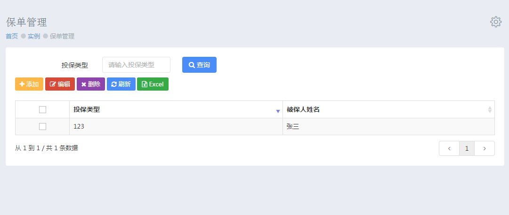
图2
由图2可知，页面上实现的功能有：查询，添加，编辑，删除，刷新和导出Excel。
在实现查询功能时，需在policy.js中编写对应的方法，直接调用Controller中的list方法即可实现查询功能。在输入框中输入所要查询 的保单类型，点击查询按钮，即可进行查询。结果如图3所示：
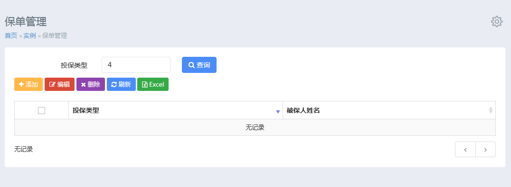
图 3
点击添加按钮后，将会弹出一个对话框，如图4所示。
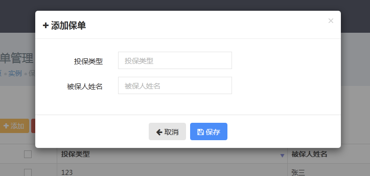
图 4
实现这一步时，需要在policy.js中添加点击事件，代码如下所示：
/**新增或编辑的提交代码*/
function submitForm(frm){
var param=frm.serialize(),id=($('id').val());
//ID为空时，为添加动作
if(lion.util.isEmpty(id)){
lion.web.post({url:'add.json',data:param,success:successAddFrm});
}else{
lion.web.post({url:'edit.json',data:param,success:successEditFrm});
}
}
//添加未成功的函数
function successAddFrm(result,args){
lion.web.parsedata({
data:result,
success:function(){
addDialog.modal('toggle');
icondg.datagrids('reload');
},
msg:'添加保单未成功'
});
}
点击“保存”后要先进行表单验证，在policy.js中编写表单验证的代码如下：
//验证表单
handleVForm=function(vForm,submitCallBackfn){
var addError = $('.alert-danger', vForm);
var addSuccess = $('.alert-success',vForm);
vForm.validate({
errorElement: 'span',
errorClass: 'help-block help-block-error',
focusInvalid: false,
onkeyup:false,
ignore: '',
messages: {
policyType:{
required:'请输入保单类型',
rangelength:jQuery.validator.format('保单类型长度为{0}和{1}字符之间')
},
insuredName:{
required:'请输入被保人姓名',
rangelength:jQuery.validator.format('被保人姓名长度为{0}和{1}字符之间'),
remote:'该被保人已存在，请输入其它姓名'
}
},
rules: {
policyType: {
required:true,
rangelength:[1,128]
},
insuredName:{
required: true,
rangelength:[1,128],
remote:{
url:'checkisexitnameen.htm', //后台处理程序
type: 'post', //数据发送方式
dataType: 'json', //接受数据格式
data: { //要传递的数据
nameEn: function() {
return $('insuredName').val();
},
id:function(){
var id=($('id').val());
if(lion.util.isNotEmpty(id)){
return id;
}
return '';
}
}
}
}
},
invalidHandler: function (event, validator) {
addSuccess.hide();
addError.show();
Metronic.scrollTo(addError, -200);
},
highlight: function (element) {
$(element).closest('.form-group').addClass('has-error');
},
unhighlight: function (element) {
$(element).closest('.form-group').removeClass('has-error');
},
success: function (label) {
label.closest('.form-group').removeClass('has-error');
},
errorPlacement:function(error,element){
//当遇到combo的对话框架的时，修改它的显示位置
if (element.hasClass('lion-combo')){
error.insertAfter(element.parent().find('div.btn-group'));
}else{
error.insertAfter(element);
}
},
submitHandler: function (form) {
addSuccess.show();
addError.hide();
submitCallBackfn(vForm);
}
});
};
在service包下的PolicyService.java下定义添加方法，代码如下：
/**
* 添加新的保单信息
* @param policy
*/
public void doCreate(Policy policy);
/**
* 根据保单类型获取保单信息
* @param iconClass
* @return
*/
public Policy doFindTypeByPolicyType(String policyType);
/**
* 判断保单的类型是否存在
* @param policyClass
* @return
*/
public boolean doIsExistByPolicyType(String policyType);
在policyServiceImpl.java中继承实现，代码如下：
@Override
public void doCreate(Policy policy) {
Assert.notNull(policy);
policyDao.save(policy);
}
@Override
public boolean doIsExistByPolicyType(String policyType) {
Assert.notNull(policyType);
Policy policy = this.doFindTypeByPolicyType(policyType);
if (policy != null)
return true;
return false;
}
@Override
public Policy doFindTypeByPolicyType(String policyType) {
Assert.notNull(policyType);
String hql = "from policy where policyType=:policyType";
Map<String, Object> params = new HashMap<String, Object>();
params.put("policyType", policyType);
java.util.List<Policy>
policys = policyDao.query(hql, params);
if (policys != null && policys.size() > 0) {
return policys.get(0);
}
return null;
}
在Controller包下的PolicyController.java中实现添加数据的代码如下：
/** 表单数据添加保存 */
@RequestMapping(value = "add" )
@ResponseBody
public ModelAndView add(@Valid @ModelAttribute("policy") PolicyVo policyVo,
Errors errors, ModelAndView modelAndView){
//是否错误消息
if (errors.hasErrors()) {
modelAndView.addObject(BindMessage.ERRORS_MODEL_KEY, errors);
return this.getJsonView(modelAndView);
}
Policy policy = new Policy();
BeanUtils.copyProperties(policyVo, policy);
policyService.doCreate(policy);
Map<String, String> params = new HashMap<String, String>();
params.put(BindResult.SUCCESS, "sys.policy.add.success");
modelAndView.addObject(BindMessage.SUCCESS, params);
return this.getJsonView(modelAndView);
}
@RequestMapping(value = "checkisexitnameen")
@ResponseBody
public String checkIsExistByNameEn(HttpServletRequest servletRequest,
@RequestParam(required = false) String policyType,@RequestParam(required=false) Long id) {
Boolean flag=Boolean.FALSE;
if(id==null){
flag = this.isExistByPolicyClass(policyType)? false : true;
}else{
Policy policy = policyService.doFindById(id);
if(policy==null){
flag = this.isExistByPolicyClass(policyType)? false : true;
}else{
flag=this.isExistByPolicyClass(policyType, policy.getPolicyType())?false:true;
}
}
return flag.toString();
}
private Boolean isExistByPolicyClass(String policyClass) {
Boolean flag = false;
if (StringUtils.isNotEmpty(policyClass)) {
flag = policyService.doIsExistByPolicyType(policyClass.trim());
}
return flag;
}
private Boolean isExistByPolicyClass(String policyClass, String oldClass) {
Boolean flag = false;
if (StringUtils.isNotEmpty(policyClass) && !policyClass.equals(oldClass)) {
flag = policyService.doIsExistByPolicyType(policyClass.trim());
}
return flag;
}
在policy_zh_CN.properties中添加国际化。
sys.policy.add.success=添加成功
sys.policy.form.adddialog.text=添加保单
页面显示如图5所示：
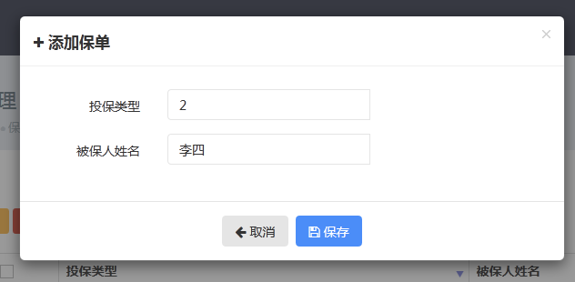
图 5
点击“保存”，即可将数据保存到数据库中。结果如图6所示。
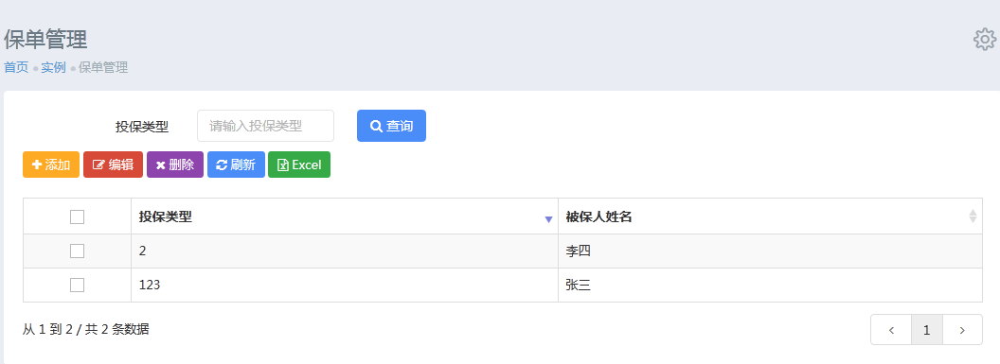
图 6
首先在policy.js中添加编辑点击事件，代码如下：
//编辑成功的函数
function successEditFrm(result,args){
lion.web.parsedata({
data:result,
success:function(){
addDialog.modal('toggle');
icondg.datagrids('reload');
},
msg:'编辑保单未成功'
});
}
//测试选择中checkbox
function formatterCheckBox(data,type,full){
return data;
}
//判断是否编辑
function formatterEidtable(data,type,full) {
var name =$.lion.lang.editable.n;
if (data) {
name = $.lion.lang.editable.y;
}
return name;
}
选中表中某一行，点击编辑按钮，弹出如图7所示的对话框。
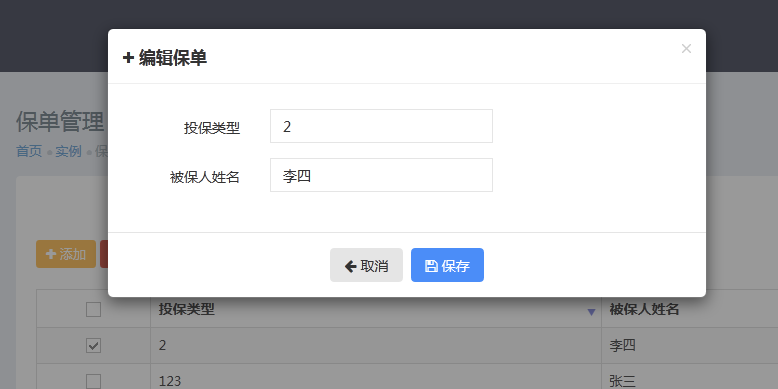
图7
在编辑时需要根据id查找信息，然后在再进行更新。在接口PolicyService.java中定义更新和查询的方法，代码如下：
/**
* 更新保单
* @param policy
* @return
*/
public Policy doUpdate(Policy policy);
/**
* 根据id查询Policy并返回保单对象
* @param id
* @return
*/
public Policy doFindById(Long id);
在PolicyServiceImpl.java中实现上述方法，代码如下：
@Override
public Policy doUpdate(Policy policy) {
Assert.notNull(policy);
policyDao.update(policy);
return policy;
}
@Override
public Policy doFindById(Long id) {
return this.policyDao.findById(id);
}
在Controller包下的PolicyController.java中实现编辑功能的数据交互，代码如下：
/**
* 保单编辑
*/
@RequestMapping(value = "editdialog")
public String editDialog(@RequestParam Long id, Model model) {
if (id != null) {
Policy policy = policyService.doFindById(id);
model.addAttribute("policy", policy);
} else {
logger.error("Edit Object id is not null!");
}
return "/system/group/editdialog";
}
/**保单编辑对话框*/
@RequestMapping(value = "edit")
@ResponseBody
public ModelAndView edit{
@Valid @ModelAttribute("policy") PolicyVo policyVo,
Errors errors,ModelAndView modelAndView){
modelAndView=this.getJsonView(modelAndView);
//判断传入的ID是否为空
if (!errors.hasErrors() && policyVo.getId() == null) {
errors.reject("sys.policy.form.id.empty");
modelAndView.addObject(BindMessage.ERRORS_MODEL_KEY, errors);
return modelAndView;
}
//判断传入的实体类是否已经存在
Policy policy = policyService.doFindById(policyVo.getId());
if (policy == null) {
errors.reject("sys.policy.form.id.empty");
return modelAndView;
}
if (errors.hasErrors()) {
modelAndView.addObject(BindMessage.ERRORS_MODEL_KEY, errors);
return this.getJsonView(modelAndView);
}
.copyProperties(policyVo, policy);
policyService.doUpdate(policy);
Map<String, String> params = new HashMap<String, String>();
params.put(BindResult.SUCCESS, "sys.policy.edit.success");
modelAndView.addObject(BindMessage.SUCCESS, params);
return this.getJsonView(modelAndView);
}
在国际化中添加信息，代码如下：
sys.policy.edit.success=编辑成功
点击保存即可更新数据，如图8所示：
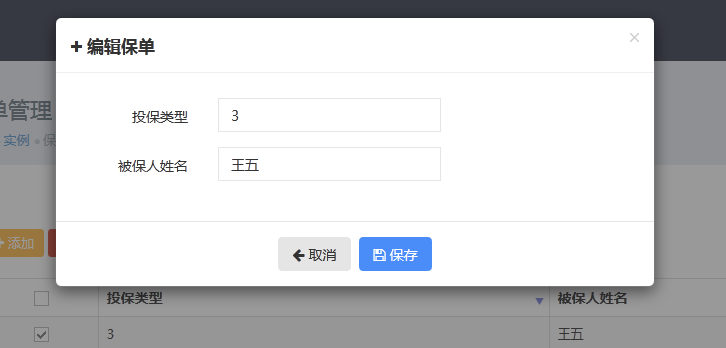
图 8
点击保存，就可以将数据更新到数据库中。结果如图9所示。
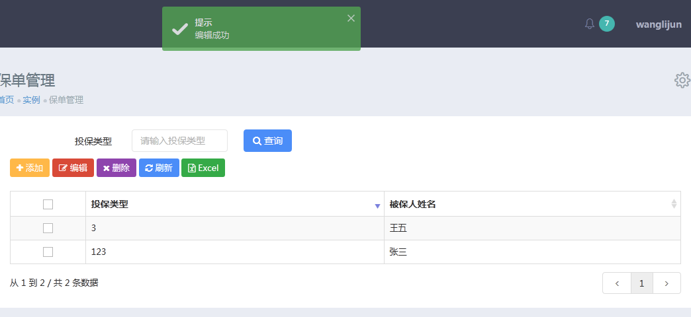
图 9
需在policy.js中添加如下代码：
//验证表单
handleVForm(addForm,submitForm);
//刷新
$('btnRefresh').click(function(){
icondg.datagrids('reload');
});
在PolicyService.java中定义删除方法，代码如下：
/**
* 根据id删除Policy对象
*
*/
public int doDeleteById(Long id);
在PolicyServiceImpl.java中实现上述方法，代码如下：
@Override
public int doDeleteById(Long id) {
String hql="delete from Policy i where i.id=:id";
Map<String,Object> params=new HashMap<String, Object>();
params.put("id",id);
return this.policyDao.updateHQL(hql, params);
}
在PolicyController.java中添加删除的方法，代码如下：
/** 删除保单 */
@RequestMapping(value = "delete")
@ResponseBody
public ModelAndView delete(@RequestParam long id, ModelAndView modelAndView) {
Map<String, String> params = new HashMap<String, String>();
int updateRow = this.policyService.doDeleteById(id);
if (updateRow > 0) {
params.put(BindResult.SUCCESS,"sys.policy.delete.success");
} else {
params.put(BindResult.SUCCESS,"sys.ploicy.delete.fail");
}
modelAndView.addObject(BindMessage.SUCCESS, params);
return this.getJsonView(modelAndView);
}
在policy.js中添加删除按钮的事件，代码如下：
//删除
$('btnDelete').on('click',function(){
var row=icondg.datagrids('getSelected');
lion.web.deletefn({
url:'delete.json',
data:row,
unselectedmsg:'请选择要删除记录',
confirmmsg:'确认要删除此记录？',
success:successForDelete,
});
});
//删除成功
function successForDelete(data,arg){
if(data!==null&&!(data.hasError)){
lion.util.success('提示',data.message);
icondg.datagrids('reload');
}else if(data!==null&&data.hasError){
var gmsg='';
for(var msg in data.errorMessage){
gmsg+=data.errorMessage[msg];
}
if(lion.util.isEmpty(gmsg)){
gmsg='未删除成功';
}
lion.util.error('提示',gmsg);
}
}
页面如图10所示：
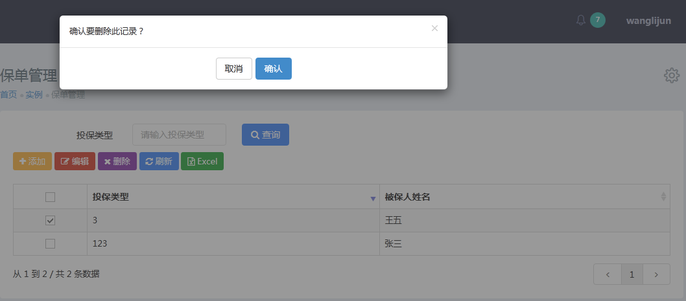
图 10
点击“确认”，即可删除选中的数据。结果如图11所示：
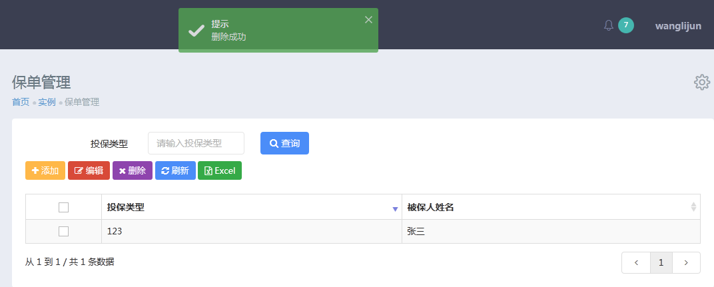
图 11
首先在数据库中bas_tablegrid表中添加一行数据，如图12所示。
图 12
在bas_column表中添加要导出的数据，如图13所示：
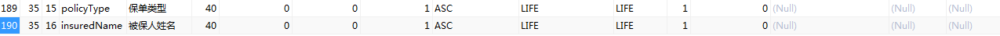
图 13
在PolicyController.java中添加导出Excel方法，代码入下所示：
/**
* 导出excel
* @param tableId
* @param sort
* @param order
* @param policy
* @param modelAndView
* @return
*/
@RequestMapping(value = "export")
@ResponseBody
public ModelAndView exportExcel(@RequestParam(required=false) String tableId,@RequestParam(required = false) String sort,@RequestParam(required = false) String order,@ModelAttribute("policy") PolicyVo policyVo,ModelAndView modelAndView){
DataGrid dataGrid=dataGridService.doFindByTableIdAndSort(tableId);
QueryCriteria queryCriteria=new QueryCriteria();
queryCriteria.setPageSize(10000);
// 设置排序字段及排序方向
if (StringUtils.isNotEmpty(sort) && StringUtils.isNotEmpty(order)) {
queryCriteria.setOrderField(sort);
queryCriteria.setOrderDirection(order);
} else {
queryCriteria.setOrderField(DEFAULT_ORDER_FILED_NAME);
queryCriteria.setOrderDirection("ASC");
}
//查询条件 中文参数名称按模糊查询
if(StringUtils.isNotEmpty(policyVo.getInsuredName())){
queryCriteria.addQueryCondition("insuredName","%"+policyVo.getInsuredName()+"%");
}
//查询保单
PageResult<Policy> result=policyService.doFindByCriteria(queryCriteria);
Map<String, Map<Object, Object>> fieldCodeTypes = new HashMap<String, Map<Object, Object>>();
Map<String, String> dataFormats = new HashMap<String, String>();
dataFormats.put("birthday", DateUtil.FORMAT_DATE_YYYY_MM_DD);
//创建.xls的文件名
String fileName=this.createFileName(FileUtil.EXCEL_EXTENSION);
modelAndView.addObject("title", dataGrid.getTitle());
Long startTime=System.currentTimeMillis();
fileName=excelExportService.export(dataGrid, result.getContent(), fileName, fieldCodeTypes, dataFormats);
logger.info("fileName:{}",fileName);
Long costTime=System.currentTimeMillis()-startTime;
modelAndView.addObject(FILENAME,fileName);
logger.info("export Excel {} cost:{} time,fileName:{}",dataGrid.getTitle(),costTime,fileName);
logger.info("out Excel导出");
return this.getExcelView(modelAndView);
}
在policy.js中添加导出excel按钮事件，代码如下：
//导出Excel
$('btnExport').on('click',function(){
var params=queryForm.serialize(),
dgtableId=icondg.attr('id');
lion.web.exportfn({url:'export.json',data:params,tableId:dgtableId});
return;
});
点击excel按钮即可将数据库中的数据以excel的形式导出。
将编辑好的页面加入到导航栏
第一步：添加一个父类容器，名为“实例” 运行程序，进入系统设置---》资源管理---》添加，添加一个父类资源，如图14所示：
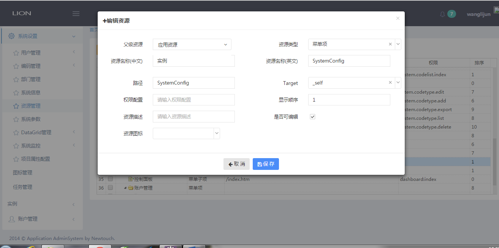
图1-14
进入 用户管理---》角色管理，选择系统角色----》关联资源，找到刚才添加的资源，授权即可，如图15所示：
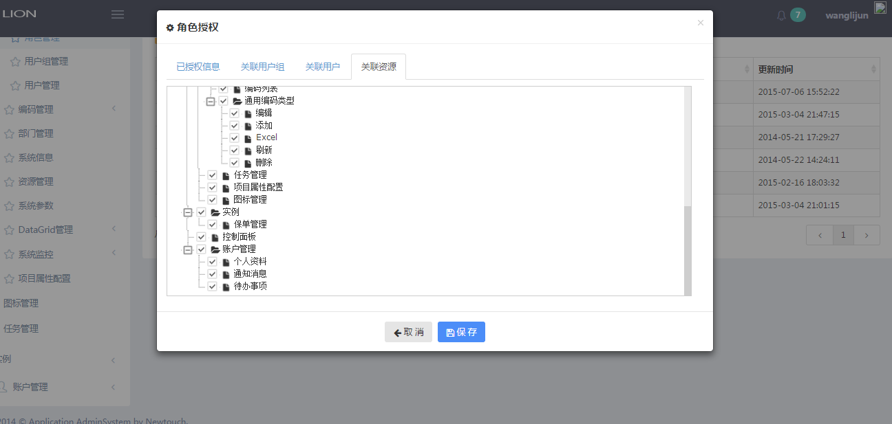
图15
第二部：将编辑好的页面添加到，父类容器中 运行程序，进入系统设置---》资源管理---》添加，添加一个保单管理的资源，如图16所示：
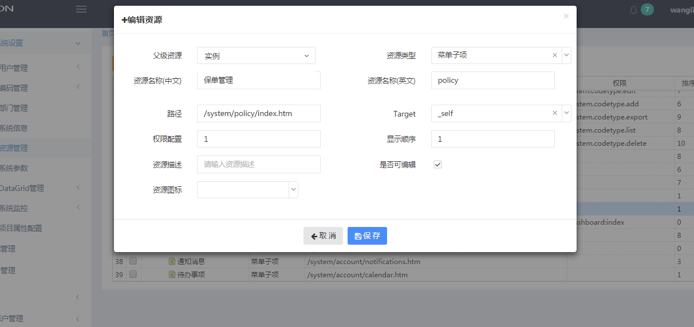
图16
进入 用户管理---》角色管理，选择系统角色----》关联资源，找到刚才添加的资源，授权即可，如图17所示：
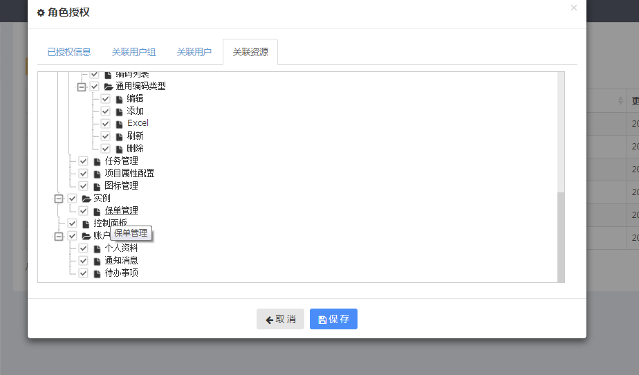
图17
完成后页面如图18所示：
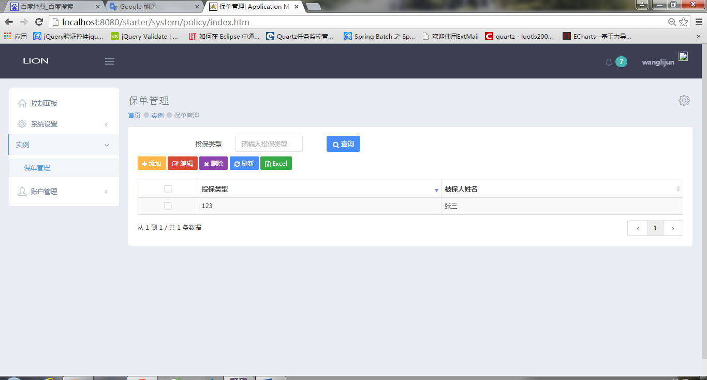
图18